4. Partition functions¶
4.1. The molecular partion function¶
Inheritance diagram
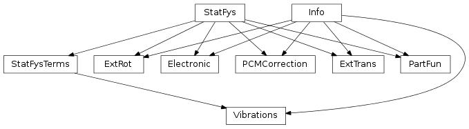
The workhorse of this module is the PartFun class. A PartFun object represents a partition function with a solid interface. PartFun objects can be used to study chemical equilibrium, rate coefficients and various thermodynamic properties.
These are the other classes and functions present in this module:
- Abstract classes:
- Info
- StatFys
- StatFysTerms
- Contributions to the partition function:
- Electronic
- ExtTrans
- ExtRot
- Vibrations
- Rotor (see rotor.py)
- Helper functions:
- helper_levels, helpert_levels, helpertt_levels,
- helper_vibrations, helpert_vibrations, helpertt_vibrations
Important: Partition functions can be constructed for NpT gases, NVT gases and many other systems. The return values of methods such as free_energy, internal_heat and heat_capacity are often given specialized names in the context of different partition functions. For example, chemists tend to use the following names:
- 3D NVT gas:
- PartFun.free_energy -> the Helmholtz free energy
- PartFun.internal_heat -> the internal energy
- PartFun.heat_capacity -> the heat capacity at constant volume
- 3D NpT gas:
- PartFun.free_energy -> the Gibbs free energy
- PartFun.internal_heat -> the enthalpy
- PartFun.heat_capacity -> the heat capacity at constant pressure
Don’t say we did not warn you. Terminology can be very confusing.
All the extensive thermodynamic quantities computed here are in atomic units per molecule. If you want to express the Gibbs free energy at 300 Kelvin of a system in kJ/mol, use the molmod module to perform unit conversions. For example:
>>> pf = PartFun(..., [ExtTrans(cp=True)])
>>> print pf.free_energy(300)/kjmol
- class tamkin.partf.Info(name)¶
Bases: object
An object that has a name and that can dump info to a file.
- Arguments:
- name – the name used for this object in the output
- dump(f)¶
Write a description to file.
- Arguments:
- f – the file object to write to
- dump_values(f, label, values, format, num_col=8)¶
Write a nicely formatted array of numbers to file.
- Arguments:
- f – the file object to write tolabel – a label that explains the meaning of the numbersvalues – the array with numbersformat – a Python format string for one number
- Optional argumet:
- num_col – the number of columns [default=8]
- class tamkin.partf.StatFys¶
Bases: object
Abstract class for (contributions to) the parition function.
The constructor (__init__) and four methods (init_part_fun, helper, helpert, helpertt) must be implemented in derived classes.
- chemical_potential(temp, helpern=None)¶
Computes the chemical potential.
- Argument:
- temp – the temperature
- Optional argument:
- helper – an alternative implementation of helpern [default=self.helpern]
- entropy(temp, helper=None, helpert=None)¶
Computes the entropy contribution per molecule.
- Argument:
- temp – the temperature
- Optional arguments:
- helper – an alternative implementation of helper [default=self.helper]helpert – an alternative implementation of helpert [default=self.helpert]
- free_energy(temp, helper=None)¶
Computes the free energy per molecule.
- Argument:
- temp – the temperature
- Optional argument:
- helper – an alternative implementation of helper [default=self.helper]
- heat_capacity(temp, helpert=None, helpertt=None)¶
Computes the heat capacity per molecule.
- Argument:
- temp – the temperature
- Optional arguments:
- helpert – an alternative implementation of helpert [default=self.helpert]helpertt – an alternative implementation of helpertt [default=self.helpertt]
- helper(temp, n)¶
Helper function.
Returns
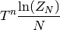
where 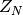 is (the contribution to) the many body partition function and
 is the total number of particles. In all
cases, except for the translational contribution, this comes down to:
is the total number of particles. In all
cases, except for the translational contribution, this comes down to: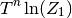
where 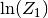 is the single-particle contribution to the partition function.
- Arguments:
- temp – the temperaturen – the power for the temperature factor
- helpern(temp, n)¶
Helper function N.
Returns
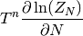
where is (the contribution to) the many body partition function and
is the total number of particles. This is used
to compute the chemical potential and reaction free energies. In all
cases, except for the total partition function and translational
contribution, this comes down to the method helper.- Arguments:
- temp – the temperaturen – the power for the temperature factor
- helpert(temp, n)¶
Helper function T.
Returns
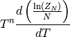
where is (the contribution to) the many body partition function and
is the total number of particles. In all
cases, except for the translational contribution, this comes down to: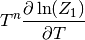
where is the single-particle contribution to the partition function.
- Arguments:
- temp – the temperaturen – the power for the temperature factor
- helpertt(temp, n)¶
Helper function TT.
Returns
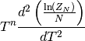
where is (the contribution to) the many body partition function and
is the total number of particles. In all
cases, except for the translational contribution, this comes down to: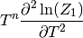
where is the single-particle contribution to the partition function.
- Arguments:
- temp – the temperaturen – the power for the temperature factor
- helperv(temp, n)¶
Helper function V
This always the same as the method helpern, except for the total partition function and the translational contribution to the partition function. Then it returns
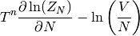
This is used for the computation of equilibrium constants, and rate constants.
- Arguments:
- temp – temperaturen – the power for the temperature factor
- init_part_fun(nma, partf)¶
Compute parameters that depend on nma and partition function.
- Arguments:
- nma – an NMA objectpartf – A PartFun object
This method is called by the PartFun object and should not be called by the user. When the PartFun object is initialized, each contribution can further initialize its parameters based on the information available in the nma and partf objects.
- internal_heat(temp, helpert=None)¶
Computes the internal heat per molecule.
- Argument:
- temp – the temperature
- Optional argument:
- helpert – an alternative implementation of helpert [default=self.helpert]
- log(temp, helper=None)¶
Log function
The logarithm of the N-particle partition function divided by the number of particles:
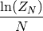
For all contributions, except for the translational, this comes down to:

- Argument:
- temp – the temperature
- Optional argument:
- helper – an alternative implementation of helper [default=self.helper]
- logn(temp, helpern=None)¶
Log function N
The derivative of the logarithm of the many-particle partition function towards to number of particles.
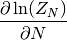
In most cases, this is the same as the logarithm of the single-particle partition divided by the number of particles. (see method log.) The only exception is the translational contribution to the partition function, and hence also the total partition function.
- Argument:
- temp – the temperature
- Optional argument:
- helpern – an alternative implementation of helpern [default=self.helpern]
- logt(temp, helpert=None)¶
Log function T
The derivative towards temperature of the logarithm of the N-particle partition function divided by the number of particles:
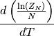
For all contributions, except for the translational, this comes down to:
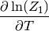
- Argument:
- temp – the temperature
- Optional arguments:
- helpert – an alternative implementation of helpert [default=self.helpert]
- logtt(temp, helpertt=None)¶
Log function TT
The second derivative towards temperature of the logarithm of the N-particle partition function divided by the number of particles.
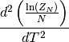
For all contributions, except for the translational, this comes down to:
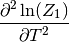
- Argument:
- temp – the temperature
- Optional arguments:
- helpertt – an alternative implementation of helpertt [default=self.helpertt]
- logv(temp, helperv=None)¶
Log function V
This always the same as the method logn, except for the total partition function and the translational contribution to the partition function. Then it returns
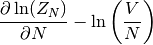
This is used for the computation of equilibrium constants, and rate constants.
- Argument:
- temp – the temperature
- Optional argument:
- helperv – an alternative implementation of helperv [default=self.helperv]
- zero_point_energy(helpern=None)¶
Return the zero-point energy.
- Optional argument:
- helper – an alternative implementation of helpern [default=self.helpern]
In TAMkin the zero-point energy is defined as the limit of the chemical potential for the temperature going towards zero.
- class tamkin.partf.StatFysTerms(num_terms)¶
Bases: tamkin.partf.StatFys
Abstract class for (contributions to) the parition function with multiple terms.
The different terms (or factors if you like) are of the same mathematical structure.
The constructor (__init__) and the four methods (init_part_fun, helper_terms, helpert_terms, helpertt_terms) must be implemented in derived classes.
- Arguments:
- num_terms`` – the number of terms present in this contribution.
- chemical_potential_terms(temp)¶
Returns an array with chemical_potential results for the distinct terms.
This is just an array version of StatFys.chemical_potential().
- entropy_terms(temp)¶
Returns an array with entropy results for the distinct terms.
This is just an array version of StatFys.entropy().
- free_energy_terms(temp)¶
Returns an array with free_energy results for the distinct terms.
This is just an array version of StatFys.free_energy().
- heat_capacity_terms(temp)¶
Returns an array with heat_capacity results for the distinct terms.
This is just an array version of StatFys.heat_capacity().
- helper(temp, n)¶
See StatFys.helper().
- helper_terms(temp, n)¶
Returns an array with all the helper results for the distinct terms.
This is just an array version of StatFys.helper().
- helpern(temp, n)¶
See StatFys.helpern().
- helpern_terms(temp, n)¶
Returns an array with all the helpern results for the distinct terms.
This is just an array version of StatFys.helpern().
- helpert(temp, n)¶
See StatFys.helpert().
- helpert_terms(temp, n)¶
Returns an array with all the helpert results for the distinct terms.
This is just an array version of StatFys.helpert().
- helpertt(temp, n)¶
See StatFys.helpertt().
- helpertt_terms(temp, n)¶
Returns an array with all the helpertt results for the distinct terms.
This is just an array version of StatFys.helpertt().
- helperv(temp, n)¶
See StatFys.helperv().
- helperv_terms(temp, n)¶
Returns an array with all the helperv results for the distinct terms.
This is just an array version of StatFys.helperv().
- internal_heat_terms(temp)¶
Returns an array with internal_heat results for the distinct terms.
This is just an array version of StatFys.internal_heat().
- log_terms(temp)¶
Returns an array with log results for the distinct terms.
This is just an array version of StatFys.log().
- logn_terms(temp)¶
Returns an array with logn results for the distinct terms.
This is just an array version of StatFys.logn().
- logt_terms(temp)¶
Returns an array with logt results for the distinct terms.
This is just an array version of StatFys.logt().
- logtt_terms(temp)¶
Returns an array with logtt results for the distinct terms.
This is just an array version of StatFys.logtt().
- logv_terms(temp)¶
Returns an array with logv results for the distinct terms.
This is just an array version of StatFys.logv().
- zero_point_energy_terms()¶
Returns an array with zero_point_energy results for the distinct terms.
This is just an array version of StatFys.chemical_potential().
- tamkin.partf.helper_levels(temp, n, energy_levels, check=False)¶
Helper 0 function for a system with the given energy levels.
Returns T^n ln(Z), where Z is the partition function
- Arguments:
- temp – the temperaturen – the power for the temperature factorenergy_levels – an array with energy levels
- Optional argument:
- check – when set to True, an error is raise when the highest energy level is occupied by more than 1% the the current temperature.
- tamkin.partf.helpert_levels(temp, n, energy_levels, check=False)¶
Helper 1 function for a system with the given energy levels.
Returns T^n (d ln(Z) / dT), where Z is the partition function
- Arguments:
- temp – the temperaturen – the power for the temperature factorenergy_levels – an array with energy levels
- Optional argument:
- check – when set to True, an error is raise when the highest energy level is occupied by more than 1% the the current temperature.
- tamkin.partf.helpertt_levels(temp, n, energy_levels, check=False)¶
Helper 2 function for a system with the given energy levels.
Returns T^n (d^2 ln(Z) / dT^2), where Z is the partition function
- Arguments:
- temp – the temperaturen – the power for the temperature factorenergy_levels – an array with energy levels
- Optional argument:
- check – when set to True, an error is raise when the highest energy level is occupied by more than 1% the the current temperature.
- class tamkin.partf.Electronic(multiplicity=None)¶
Bases: tamkin.partf.Info, tamkin.partf.StatFys
The electronic contribution to the partition function.
- Optional argument:
- multiplicity – the spin multiplicity of the electronic system
When the optional argument is not given, it is determined when the PartFun object is constructed.
- dump(f)¶
See Info.dump().
- helper(temp, n)¶
See StatFys.helper().
- helpert(temp, n)¶
See StatFys.helpert().
- helpertt(temp, n)¶
See StatFys.helpertt().
- init_part_fun(nma, partf)¶
- class tamkin.partf.ExtTrans(cp=True, pressure=None, density=None, dim=3, mobile=None)¶
Bases: tamkin.partf.Info, tamkin.partf.StatFys
The contribution from the external translation.
This contribution includes many body terms and optional constant pressure corrections. It is based on the classical ideal gas approximation.
- Optional arguments:
- cp – When True, an additional factor is included in the partition function to model a constant pressure (or constant surface tension) ensemble instead of a constant volume (or constant surface) ensemble.pressure – (only allowed when cp==True) The external pressure exerted on the system in case of the NpT ensemble. The default is 1 atm for 3D gases. The default for 2D systems is 75.64 miliNewton per meter, i.e. the surface tension of water. For other dimensions, the default is 1.0.density – (only allowed when cp==False) The density of the system in case of the NVT ensemble. The default is 1.0 mol/meter**dim.dim – The dimension of the ideal gas.mobile – A list of atom indexes that are free to translate. In case of a mobile molecule adsorbed on a surface, only include atom indexes of the adsorbate. The default is that all atoms are mobile.
- cp¶
- density¶
The density in case of an NVT ensemble.
- dump(f)¶
See Info.dump().
- helper(temp, n)¶
See StatFys.helper().
- helpern(temp, n)¶
See StatFys.helpern().
- helpert(temp, n)¶
See StatFys.helpert().
- helpertt(temp, n)¶
See StatFys.helpertt().
- helperv(temp, n)¶
See StatFys.helperv().
- init_part_fun(nma, partf)¶
- mobile¶
- pressure¶
The pressure in case of an NpT ensemble.
- class tamkin.partf.ExtRot(symmetry_number=None, im_threshold=1.0)¶
Bases: tamkin.partf.Info, tamkin.partf.StatFys
The contribution from the external rotation.
This class is based on the integral approximation of the partition function.
- Optional arguments:
- symmetry_number – The rotational symmetry number of the molecule.im_threshold – When a moment of inertia drops below this threshold, it is discarded, which matters for linear molecules.
- dump(f)¶
See Info.dump().
- helper(temp, n)¶
See StatFys.helper().
- helpert(temp, n)¶
See StatFys.helpert().
- helpertt(temp, n)¶
See StatFys.helpertt().
- init_part_fun(nma, partf)¶
- class tamkin.partf.PCMCorrection(point1, point2=None)¶
Bases: tamkin.partf.Info, tamkin.partf.StatFys
A correction to the free energy as function of the temperature.
The correction can be a constant shift of the free energy or a linear shift of the free energy as function of the temperature.
- Argument:
- point1 – A 2-tuple with free energy and a temperature. A correction for the free energy at the given temperature. (If no second point is given, the same correction is applied to all temperatures.)
- Optional argument:
- point2 – A 2-tuple with free energy and a temperature. In combination with point1, a linear free energy correction as function of the temperature is added.
- dump(f)¶
See Info.dump().
- helper(temp, n)¶
See StatFys.helper().
- helpert(temp, n)¶
See StatFys.helpert().
- helpertt(temp, n)¶
See StatFys.helpertt().
- class tamkin.partf.Vibrations(classical=False, freq_scaling=1, zp_scaling=1, freq_threshold=None)¶
Bases: tamkin.partf.Info, tamkin.partf.StatFysTerms
The vibrational contribution to the partition function.
- Optional arguments:
- classical – When True, the vibrations are treated classically [default=False]freq_scaling – Scale factor for the frequencies [default=1]zp_scaling – Scale factor for the zero-point energy correction [default=1]freq_threshold – Frequencies whose absolute value is below this threshold will be left out of the partition function, in addition to those already indicated as ‘almost’ zero by the NMA. This option is only needed to fix some pathological cases.
- dump(f)¶
See Info.dump().
- helper_terms(temp, n)¶
- helpert_terms(temp, n)¶
- helpertt_terms(temp, n)¶
- init_part_fun(nma, partf)¶
- tamkin.partf.helper_vibrations(temp, n, freqs, classical=False, freq_scaling=1, zp_scaling=1)¶
Helper 0 function for a set of harmonic oscillators.
Returns T^n ln(Z), where Z is the partition function.
- Arguments:
- temp – the temperaturen – the power for the temperature factorfreqs – an array with frequencies
- Optional arguments:
- classical – When True, the classical partition function is used. [default=False]freq_scaling – Scale the frequencies with the given factor. [default=1]freq_zp – Scale the zero-point energy correction with the given. factor [default=1]
- tamkin.partf.helpert_vibrations(temp, n, freqs, classical=False, freq_scaling=1, zp_scaling=1)¶
Helper 1 function for a set of harmonic oscillators.
Returns T^n (d ln(Z) / dT), where Z is the partition function.
- Arguments:
- temp – the temperaturen – the power for the temperature factorenergy_levels – an array with energy levels
- Optional arguments:
- classical – When True, the classical partition function is used [default=False]freq_scaling – Scale the frequencies with the given factor [default=1]freq_zp – Scale the zero-point energy correction with the given factor [default=1]
- tamkin.partf.helpertt_vibrations(temp, n, freqs, classical=False, freq_scaling=1, zp_scaling=1)¶
Helper 2 function for a set of harmonic oscillators.
Returns T^n (d^2 ln(Z) / dT^2), where Z is the partition function.
- Arguments:
- temp – the temperaturen – the power for the temperature factorenergy_levels – an array with energy levels
- Optional arguments:
- classical – When True, the classical partition function is used [default=False]freq_scaling – Scale the frequencies with the given factor [default=1]freq_zp – Scale the zero-point energy correction with the given factor [default=1]
- class tamkin.partf.PartFun(nma, terms=None)¶
Bases: tamkin.partf.Info, tamkin.partf.StatFys
The partition function.
This object contains all contributions to the partition function in self.terms and makes sure they are properly initialized. It also implements all the methods defined in StatFys, e.g. it can compute the entropy, the free energy and so on.
- Arguments:
- nma – NMA object
- Optional arguments:
- terms – list to select the contributions to the partition function e.g. [Vibrations(classical=True), ExtRot(1)]
- dump(f)¶
See Info.dump().
- helper(temp, n)¶
See StatFys.helper().
- helpern(temp, n)¶
See StatFys.helpern().
- helpert(temp, n)¶
See StatFys.helpert().
- helpertt(temp, n)¶
See StatFys.helpertt().
- helperv(temp, n)¶
See StatFys.helperv().
- write_to_file(filename)¶
Write an extensive description of the parition function to a file.
- Argument:
- filename – The name of the file to write to.
4.2. Chemical models based on partition functions¶
The term chemical models is used as a group name for thermodynamic models of chemical equilibria and kinetic models of chemical reactions.
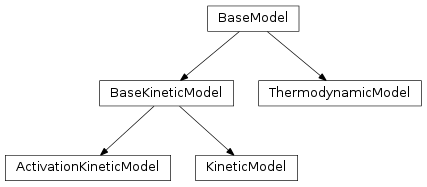
- class tamkin.chemmod.BaseModel¶
Base class for all physico-chemical models.
- Useful attribute:
- pfs_all – A dictionary with all partition functions involved in the model. The values are the partition function objects. The keys are the corresponding signed stoichiometries.
The methods in the base class are mainly used by the Monte Carlo routine in the ReactionAnalysis class.
- alter_freqs(freq_error, scale_energy)¶
Randomly distort the frequencies and energies.
- Arguments:
- freq_error – The absolute error to be introduced in the frequencies.scale_energy – The relative error to be introduced in the (electronic) energies.
- backup_freqs()¶
Keep a backup copy of the frequencies and the energy of each partition function.
- dump(f)¶
Write all info about the model to a file.
- dump_table(temp, c)¶
Write a CSV file with the principal energies to a stream .
- Arguments:
- temp – The temperature to use for the temperature-dependent quantities.c – A csv.writer object from the built-in Python csv module.
- energy_difference()¶
Compute the electronic energy difference between (+) products and (-) reactants.
- equilibrium_constant(temp, do_log=False)¶
Compute the equilibrium constant at the given temperature.
- Argument:
- temp – The temperature.
- Optional argument:
- do_log – When True, the logarithm of the equilibrium constant is returned instead of just the equilibrium constant itself. [default=False]
- free_energy_change(temp)¶
Compute the change in free energy.
The change in free energy depends on the the pressure in the ExtTrans contribution to the partition function, if such a contribution would be present.
- Argument:
- temp – the temperature
- internal_heat_difference(temp)¶
Compute the internal_heat difference between (+) products and (-) reactants.
- Argument:
- temp – The temperature.
- restore_freqs()¶
Restore the backup of the frequencies and the energy of each partition function.
- write_table(temp, filename)¶
Write a CSV file with the principal energies to a file.
- Arguments:
- temp – The temperature to use for the temperature-dependent quantities.filename – The name of the CSV file.
- write_to_file(filename)¶
Write the model to a text file.
- One argument:
- filename – The file to write the output.
- zero_point_energy_difference()¶
Compute the zero-point energy difference between (+) products and (-) reactants.
- class tamkin.chemmod.ThermodynamicModel(pfs_react, pfs_prod)¶
A model for a thermodynamic equilibrium.
- Arguments:
- pfs_react – A list with reactant partition functions.pfs_prod – A list with product partition functions.
Both arguments are lists whose items should be PartFun objects. One may also replace an item by a (pf, st) tuple, where pf is the partition function and st is the stoichiometry.
- Useful attributes:
- unit_name – A string with the SI unit of the equilibrium constantunit – The conversion factor to transform the equilibrium constant into SI units (equilibrium_const/self.unit)
- dump(f)¶
Write all info about the thermodynamic model to a file.
- dump_table(temp, c)¶
Write a CSV file with the principal energies to a stream .
- Arguments:
- temp – The temperature to use for the temperature-dependent quantities.c – A csv.writer object from the built-in Python csv module.
- class tamkin.chemmod.BaseKineticModel¶
A generic model for the rate constant of a chemical reaction.
- Useful attribute:
- pfs_all – A dictionary with all partition functions involved in the model. The values are the partition function objects. The keys are the corresponding signed stoichiometries.
The methods in the base class are mainly used by the Monte Carlo routine in the ReactionAnalysis class.
- rate_constant(temp, do_log=False)¶
Compute the rate constant of the reaction in this analysis
- Arguments:
- temp – The temperature.
- Optional argument:
- do_log – When True, the logarithm of the rate constant is returned instead of just the rate constant itself. [default=False]
- class tamkin.chemmod.KineticModel(pfs_react, pf_trans, tunneling=None)¶
A model for the rate constant of a single-step chemical reaction.
- Arguments:
- pfs_react – A list of partition functions for the reactants.pf_trans – The partition function of the transition state.
The first argument is a list whose items should be PartFun objects. One may also replace an item by a (pf, st) tuple, where pf is the partition function and st is the stoichiometry.
- Optional argument:
- tunneling – A tunneling correction object. If not given, no tunneling correction is applied.
- Useful attributes:
- unit_name – A string containing the SI unit of the rate constant.unit – The conversion factor to transform the rate constant to SI units (rate_const/self.unit)
- dump(f)¶
Write all info about the kinetic model to a file.
- dump_table(temp, c)¶
Write a CSV file with the principal energies to a stream .
- Arguments:
- temp – The temperature to use for the temperature-dependent quantities.c – A csv.writer object from the built-in Python csv module.
- rate_constant(temp, do_log=False)¶
See BaseKineticModel.rate_constant()
The implementation is based on transition state theory.
- class tamkin.chemmod.ActivationKineticModel(tm, km)¶
A model for the rate constant of a single-step chemical reaction with a pre-reactive complex.
- Arguments:
- tm – The thermodynamic model for the pre-reactive complex.km – The kinetic model for the single-step reaction.
- dump(f)¶
Write all info about the kinetic model to a file.
- rate_constant(temp, do_log=False)¶
4.3. Tools to analyze partition functions and kinetic models¶
- class tamkin.pftools.ThermoAnalysis(pf, temps)¶
Perform a regular thermochemistry analysis.
- Arguments:
- pf – A partition functiontemps – An array with temperatures to consider.
The tables with energy, free energy, heat capacity, entropy, logarithm of the partition function and the first and second order derivative of the logarithm of the partition functions are computed and stored in self.tables. The latter attribute is a list of ThermoTable objects.
The results can be written to a csv file with the method write_to_file.
- dump(f)¶
Write the entire thermochemistry analysis in csv format.
- Argument:
- f – the stream to write to.
- write_to_file(filename)¶
Write the entire thermochemistry analysis to a csv file.
- Argument:
- filename – the file to write the output.
- class tamkin.pftools.ThermoTable(label, unit, unit_name, method_name, pf, temps, pf_method_name=None)¶
A thermo table, i.e. the thermochemistry analysis for one specific thermodynamic quantity.
This object is used by the ThermoAnalysis class and should probably never be used directly.
- Arguments:
- label – a string to identify the thermodynamic quantity.unit – the conversion factor from the conventional unit to atomic unitsunit_name – a human readable string that describes the conventional unitmethod_name – the method of the partition function that computes the quantity of interesttemps – the temperatures at which the quantity has to be computed.
- Optional argument:
- pf_method_name – In case of the actual partition function object, this alternative method can be used compute to quantity of interest. This workaround is required due to poor naming conventions in statistical physics.
The results are stored in an array self.data of which the columns correspond to the given temperatures and the rows correspond to the different terms in the partition function.
The attribute self.keys is a list describing the rows, i.e. the each contribution from the partition function.
- dump(f)¶
Dumps the table in csv format
- Arguments:
- f – the file object to write to
- class tamkin.pftools.ReactionAnalysis(kinetic_model, temp_low, temp_high, temp_step=10.0)¶
A Reaction analysis object.
- Arguments:
- kinetic_model – A kinetic model object. See mod:tamkin.chemmod.temp_low – The lower bound of the temperature interval in Kelvin.temp_high – The upper bound of the temperature interval in Kelvin.
- Optional arguments:
- temp_step – The resolution of the temperature grid. [default=10K]
The rate constants are computed on the specified temperature grid and afterwards the kinetic parameters are fitted to these data. All the results are stored as attributes of the reaction analysis object and can be written to text files (method write_to_file) or plotted (methods plot and plot_parameters). The results from multiple reactions can be gathered in a single plot when this is desirable.
- The following attributes may be useful:
- A and Ea – The kinetic parameters in atomic units.R2 – The Pearson R^2 of the fit.temps – An array with the temperature grid in Kelvintemps_inv – An array with the inverse temperaturesrate_consts – the rate constants at the grid points in atomic unitsln_rate_consts – the logarithm of the rate constants in atomic units
- dump(f)¶
Write the results in text format on screen or to another stream.
- Argument:
- f – the file object to write to.
- monte_carlo(freq_error=7.251632778591094e-07, energy_error=0.0, num_iter=100)¶
Estimate the uncertainty on the parameters
The uncertainties are modeled by stochastic errors in the frequencies and the barrier. These may be caused by limitiated in convergence of the wafunction, limited convergence of the geometry optimization, errors in the numerical integration in DFT methods, or numerical errors due to the computation of the Hessian with a finite difference method.
- Optional argument:
- freq_error – The with of the absolute gaussian distortion on the frequencies [default=1*invcm]energy_error – The width of the relative gaussian error on the energy barrier [default=0.00]num_iter – The number of Monte Carlo iterations [default=1000]
- plot_arrhenius(filename=None, label=None, color='red')¶
Plot the rate constant and the fitted line.
- Optional arguments:
- filename – When given, the plot is written to that file, otherwise this plot method can be called multiple times with different reaction analysis objects to put all the results in one plot.label – When multiple fits are put in one figure, this label is used distinguish between the various results with a legend.color – Determines the color of the plotted data points and line. [default=”red”]. Common color names, html codes and RGB tuples are accepted. (See matplotlib docs for more info.)
- plot_parameters(filename=None, label=None, color='red', marker='o', error=True)¶
Plot the kinetic parameters.
- Optional arguments:
- filename – When given, the plot is written to that file, otherwise this plot method can be called multiple times with different reaction analysis objects to put all the results in one plot.label – When multiple fits are put in one figure, this label is used distinguish between the various results with a legend.color – Determines the color of the plotted data points and line. [default=”red”]. Common color names, html codes and RGB tuples are accepted. (See matplotlib docs for more info.)marker – The marker used for the (original) fitted parameters [default=”o”] (See matplotlib docs for more info.)error – A boolean that determines whether the monte carlo results are plotted when they are available. [default=True]
- write_to_file(filename)¶
Write the entire analysis to a text file.
- One argument:
- filename – the file to write the output.
4.4. The 1-D rotor¶
The description of one-dimensional hindered rotors is also implemented in TAMkin, in the module rotor.py. It calculates the partition function of a 1-D rotor.
The current implementation supports one-dimensional free and hindered rotors. For practical applications it is apparently not necessary to consider higher- dimensional hindered rotors. [1]
[1] Chemical Physics, Vol. 328 (1-3) 251 - 258, 2006
- class tamkin.rotor.HarmonicBasis(nmax, a)¶
A harmonic basis set for periodic one-dimensional QM systems
In addition to the definition of the basis set, this class also implements the kinetic and potential energy operators required for the solution of the schrodinger equation. The workflow is as follows:
>>> a = 10.0 # the size of the system >>> hb = HarmonicBasis(10, a) # create basis object >>> grid = np.arange(0.0, 10.01, 1.0) # define a grid >>> v = -np.exp(-((grid-5)/2)**2) # define a potential on the grid >>> v_coeffs = hb.fit_fn(grid, v, 10) # expand the potential in the basis >>> mass = 1.0 >>> energies, wfns = hb.solve(mass, v_coeffs, evecs=True) # solve problem
- Arguments:
- nmax – The maximum index used for the gaussian basis. Hence the the number of basis functions is 2*nmax+1a – The length of the periodic system
- The basis functions are:
- 1/sqrt(a/2)cos(2*pi*x/a)/sqrt(a/2)sin(2*pi*x/a)/sqrt(a/2)...cos(nmax*2*pi*x/a)/sqrt(a/2)sin(nmax*2*pi*x/a)/sqrt(a/2)
This is an orthonormal basis. This object has methods to construct a Hamiltonian operator in this basis and to transform a function on a grid into an expansion in this basis (and back).
- eval_deriv(grid, coeffs)¶
Evaluate the derivative of function represented by coeffs
- Arguments:
- grid – the values at which the derivative must ben evaluatedcoeffs – the expansion coefficients
- eval_deriv2(grid, coeffs)¶
Evaluate the second derivative of function represented by coeffs
- Arguments:
- grid – the values at which the second derivative must be evaluatedcoeffs – the expansion coefficients
- eval_fn(grid, coeffs)¶
Evaluate the function represented by coeffs
- Arguments:
- grid – the values at which the function must be evaluatedcoeffs – the expansion coefficients
- fit_fn(grid, v, dofmax, rotsym=1, even=False, rcond=0.0, v_threshold=0.01)¶
Fit the expansion coefficients that represent function f
- Arguments:
- grid – The x values on which the function f is known.v – The function to be represented by expansion coefficients.dofmax – The maximum number of cosines in the fit. When even==False, the same number of sines is also included.
- Optional arguments:
- rotsym – Impose this rotational symmetry [default=1]. Must be an integer and is least 1..even – Only fit even functions, i.e. cosines. [default=False]rcond – The cutoff for the singular values in the least squares fit. [default=1e-10]v_threshold – Tolerance on the relative error between the Fourier expansion and the data points of the scan. [default=0.01]. Absolute errors smaller than 1 kJ/mol are always ignored.
In case the Fourier expansion represents a poor fit (determined by v_threshold), a ValueError is raised. It means that you have to check your torsional scan datapoints for errors.
- get_empty_op()¶
Returns an empty operator (zero)
- get_hamiltonian_op(mass, potential)¶
Returns the Hamiltonian operator for the given mass and potential
- Arguments:
- mass – the mass of the particlepotential – the expansion coefficients of the potential energy
- size¶
The size of the basis set. (read-only attribute)
- solve(mass, potential, evecs=False)¶
Return the energies and wavefunctions for the given mass and potential
- Arguments:
- mass – the mass of the particlepotential – the expansion coefficients of the potential energy
- Optional argument:
- evecs – When True, also the eigenstates are returned. [default=False]
- exception tamkin.rotor.RotorError¶
This exception is raised when Rotor specific errors are encountered.
- tamkin.rotor.compute_cancel_frequency_mbh(molecule, dihedral, top_indexes)¶
Compute the frequency of the rotor in the HO approximation
This function is based on the MBH method and returns the frequency that has to be canceled when this mode is replaced by a free or hindered rotor.
- Arguments:
- molecule – A Molecule object. (see tamkin.data)top_indexes – The indexes of the rotor atoms.
- tamkin.rotor.compute_moments(coordinates, masses3, center, axis, indexes)¶
Computes the absolute and the relative moment of an internal rotor
- Arguments:
- coordinates – The coordinates of all atoms, float numpy array with shape (N,3).masses3 – The diagonal of the mass matrix, each mass is repeated three tines, float numpy array with shape 3N.center – A point on the rotation axis. Float numpy array with shape 3.axis – A unit vector with the direction of the rotation axis. Float numpy array with shape 3.indexes – The indexes of the atoms that belong to the rotor.
The implementation is based on the transformation of the mass-matrix to the internal rotation coordinate. The derivative of the internal coordinate towards cartesian coordinates represents a small displacement of the atoms. This displacement is constrained to show no external linear or rotational moment.
- class tamkin.rotor.Rotor(rot_scan, molecule=None, cancel_freq='mbh', suffix=None, rotsym=1, even=False, num_levels=50, dofmax=5, v_threshold=0.01, large_fixed=False)¶
Partition function term for a one-dimensional rotor
The contribution from the free or hindered rotor to the partition function is based on the quantum mechanical solution of the rotational motion. To avoid double counting problems, one must also provide the frequency of this motion as if it was treated as a harmonic oscillator. The corresponding contribution to the partition function is subtracted. (Use compute_cancel_frequency to obtain this frequency.)
- Arguments:
- rot_scan – A rotational scan object. (free or hindered rotor information)
- Optional arguments:
- molecule – Molecule to which the rotor applies, is used to compute the cancelation frequency. Not required when the cancel_freq argument is present.cancel_freq – The frequency to cancel in the vibrational partition function. This can also be ‘mbh’ or ‘scan’ to indicate that the cancel frequency should be computed using the MBH method or based on the second order derivative of the rotational potential. Note that the latter option is only possible in the case of the hindered rotor formalism. [default=’mbh’]suffix – A name suffix used to distinguish between different rotors.rotsym – The rotational symmetry of the rotor. [default=1]even – True of the rotor is not chiral, i.e. when it has an even potentialnum_levels – The number of energy levels considered in the QM treatment of the rotor [default=50]dofmax – The maximum number of cosines used to represent the torsional potential. if the potential is not even, the same number of sines is also used. [default=5]v_threshold – Tolerance on the relative error between the Fourier expansion and the data points of the scan. [default=0.01]. Absolute errors smaller than 1 kJ/mol are always ignored.large_fixed – When True, assume that the large part of the system is fixed in space while the small part rotates. (this means that the absolute moment of the rotor is used instead of the relative moment)
In case the Fourier expansion of the potential represents a poor fit (determined by v_threshold), a ValueError is raised. It means that you have to check your torsional scan datapoints for errors.
- dump(f)¶
Write all the information about the rotor to a file
This method is part of the PartFun API and should never be called directly. It will only work properly once the init_part_fun method is called.
- Arguments:
- f – A file-like object.
- helper_terms(temp, n)¶
- helpert_terms(temp, n)¶
- helpertt_terms(temp, n)¶
- init_part_fun(nma, partf)¶
- plot_levels(prefix, temp, num=20, do_levels=True, do_data=True)¶
Plots the potential with the energy levels
- Arguments:
- prefix – A filename prefix for the png files.temp – A temperature that is used to indicate the statistical weight of each level in the plots
- Optional argument:
- num – The number of energy levels and wavefunctions to be plotted. [default=10]do_levels – When True, the energy levels are plotted. [default=True]do_data – When True, the data points are plotted. [default=True]
- One image will be generated:
- ${prefix}.png – The potential and the energy levels.
- potential¶
Cached attribute: A tuple with angles and potential energies (hindered only).
If the rotor is free, the result is None. The reference for the potential energy is the energy of the reference geometry used in the partition function.
4.5. Tunneling effects in chemical reactions¶
This module calculates the correction to the partition function due to (quantum) tunneling through the reaction barrier.
Instances of the classes Eckart or Wigner act as functions that take one argument, the temperature, and return a correction factor for the rate coefficient. Such an object can be given as an optional argument to the constructor of a tamkin.chemmod.KineticModel object to take tunneling corrections into account for the computation of rate constants.
- class tamkin.tunneling.TunnelingCorrection¶
Abstract base class for the implementation of a Tunneling correction
This class merely defines the interface and holds some docstrings.
- __call__(temps)¶
Compute a the tunneling correction as function of the temperature
- Argument:
- temps – a numpy array of temperatures or a single temperature
Derived classes must override this method with a function that computes the correction factors for the rate constant at the given temperatures.
- dump(f)¶
Write descriptive info about the tunneling correction to a text file
- class tamkin.tunneling.Eckart(pfs_react, pf_trans, pfs_prod)¶
Implements the Eckart tunneling correction factor
This correction is proposed in C. Eckart, Phys. Rev. 35, 1303 (1930), http://link.aps.org/doi/10.1103/PhysRev.35.1303.
- Arguments:
- pfs_react – a list with partition functions of the reactantspf_trans – the partition function of the transition statepfs_prod – a list with partition functions of the products
- Attributes derived from these arguments:
- self.Ef – forward energy barrierself.Er – reverse energy barrierself.nu – the imaginary frequency (as a real number)
Note that this correction is only defined for transition states with only one imaginary frequency.
- __call__(temps)¶
- dump(f)¶
Write descriptive info about the tunneling correction to a text file
- class tamkin.tunneling.Wigner(pf_trans)¶
Implements the Wigner tunneling correction factor
This correction is proposed in E. Wigner, Z. Physik. Chern. B 19, 203 (1932).
- Arguments:
- pf_trans – the partition function of the transition state
- Attribute derived from these argument:
- self.nu – the imaginary frequency (as a real number)
Note that this correction is only defined for transition states with only one imaginary frequency.
- __call__(temps)¶
- dump(f)¶
Write descriptive info about the tunneling correction to a text file
- class tamkin.tunneling.Miller(pf_trans)¶
Implements the Miller tunneling correction factor
This correction is proposed in Miller, W. H. J. Chem. Phys. 1973, 61, 1823, http://dx.doi.org/10.1063/1.1682181.
- Arguments:
- pf_trans – the partition function of the transition state
- Attribute derived from these argument:
- self.nu – the imaginary frequency (as a real number)
Note that this correction is only defined for transition states with only one imaginary frequency.
- __call__(temps)¶
- dump(f)¶
Write descriptive info about the tunneling correction to a text file